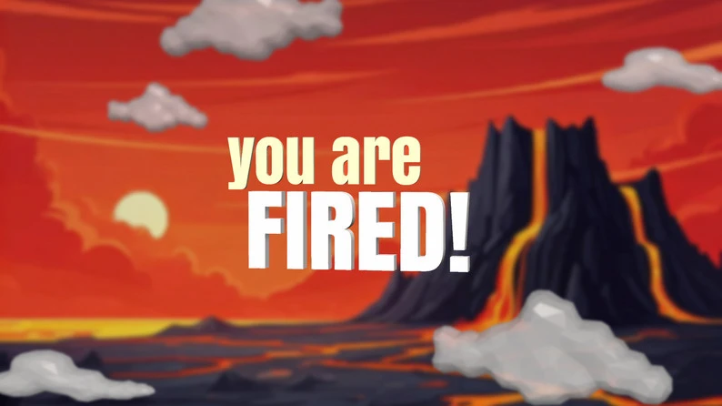
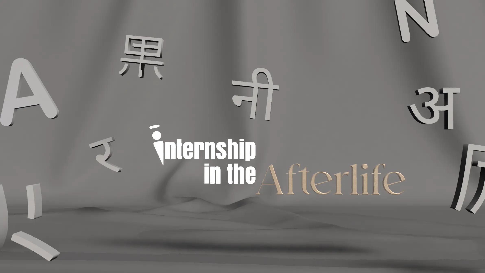
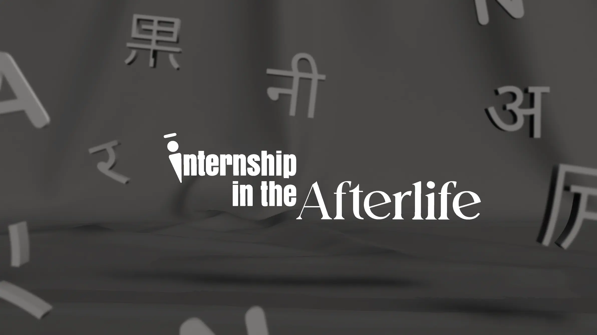
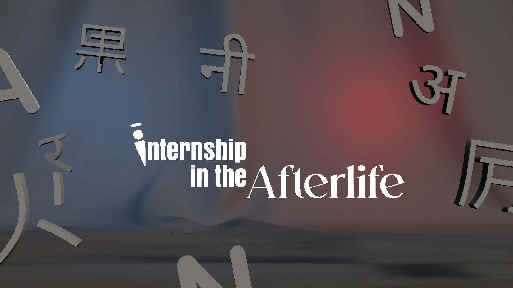
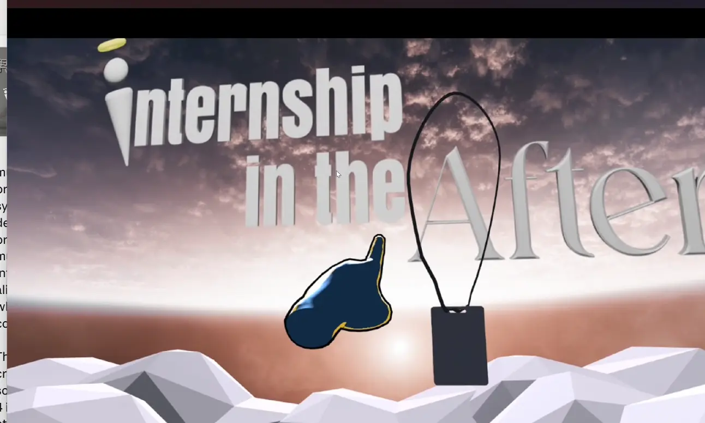
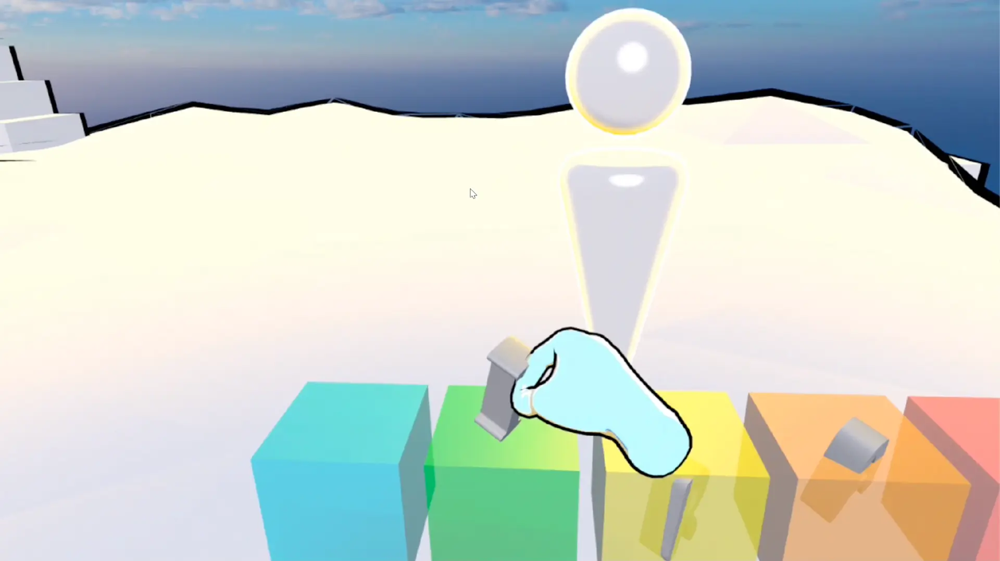
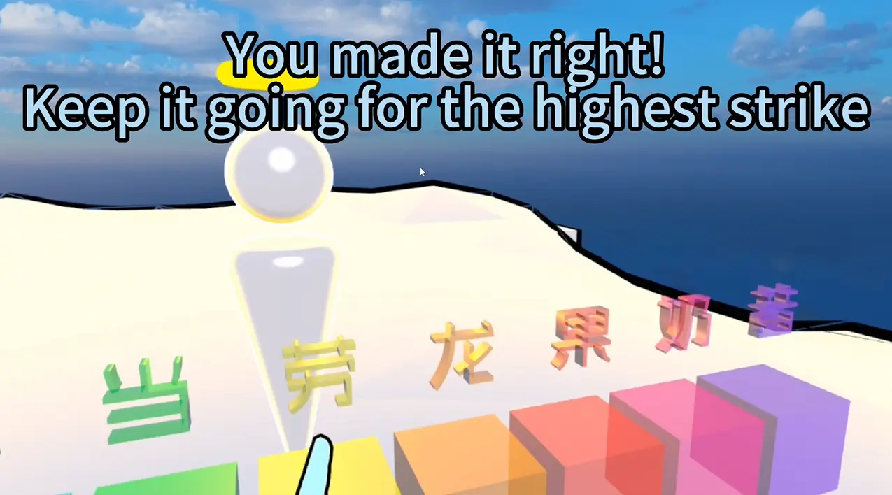
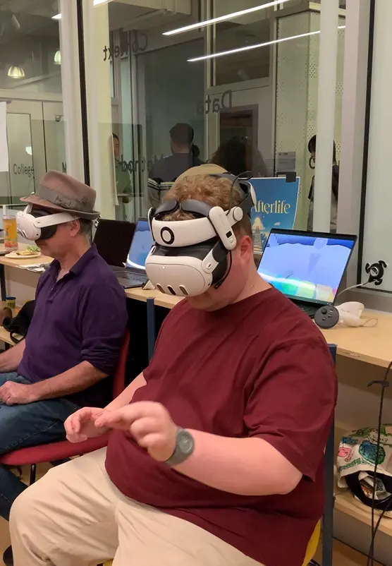
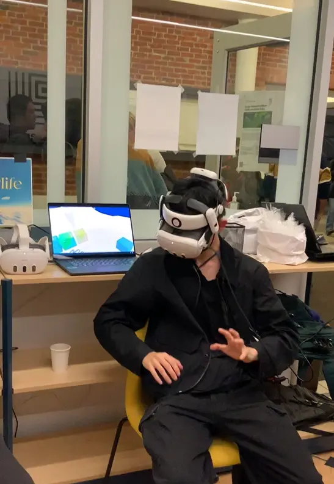

XR & Immersive · 2024
Internship in the
Afterlife
Afterlife
Visual Design
Narrative Design
VR Experience
Unity 3D
XR
Game Design
Internship in the Afterlife is a VR language game about empathy. You arrive at the entry booth of the afterlife — and here, your linguistic ability determines whether you ascend or descend.
Players are briefly shown a foreign word in English, Hindi, or Mandarin, then must reconstruct it from memory using floating syllables. Get it right and you move forward. Get it wrong — you're fired, straight to hell.
The game was born from a real observation: the disorientation and high-stakes pressure that immigrants, international students, and travellers feel when navigating an unfamiliar language. By placing players inside that feeling, the experience builds genuine empathy rather than just awareness.
The promotional posters and in-game screens were created using AI-generated imagery via Gemini with custom-designed typographic overlays — a deliberate blend of generated environment and crafted identity.







The game was playtested through multiple rounds of user testing, with feedback about complexity, timing, and haptic feedback. The final version was exhibited publicly, where players across different linguistic and cultural backgrounds engaged with the experience.

